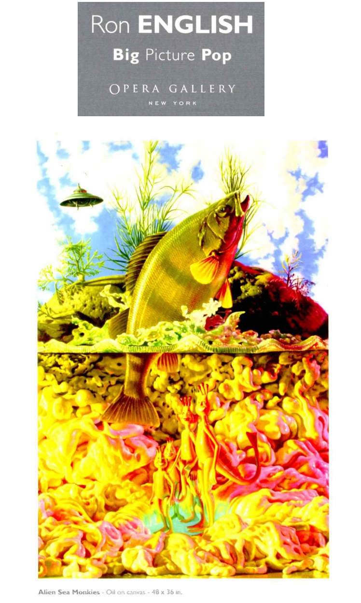
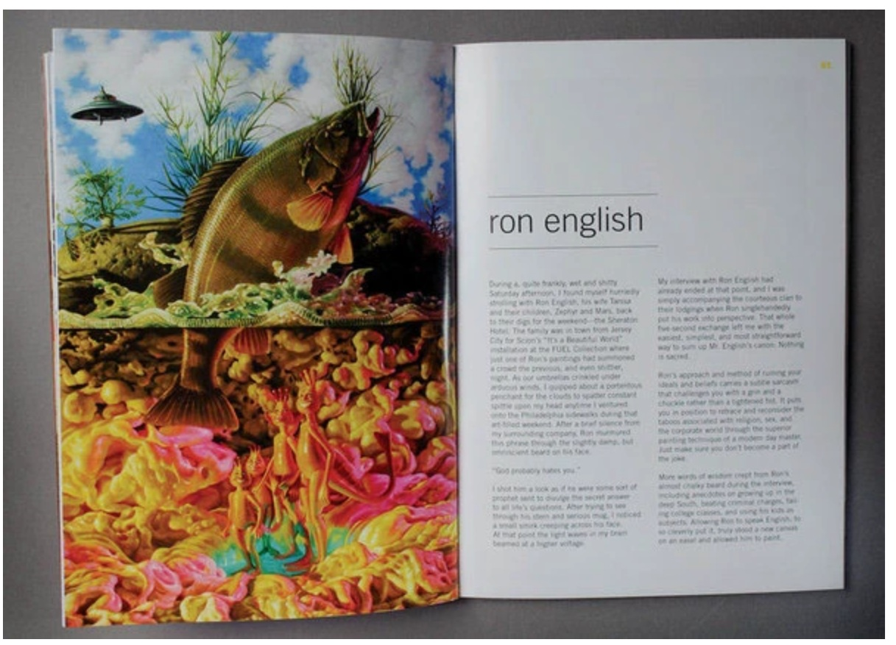

Exhibitions
Big Picture Pop, Opera Gallery, New York, New York, US, November 29–late December 2007.
Literature
Ron English, Abject Expressionism: The Art of Ron English (San Francisco: Last Gasp, 2007), p. 147. ISBN 978-0867196894.
Ron English, Original Grin: The Art of Ron English (Paris: Cernunnos, 2019), p. 177. ISBN 978-2374950938.
Notes
This work is reproduced in the exhibition catalogue for Big Picture Pop.
It also appears on Behance’s project page for Living Proof Magazine Issue #3, published March 6, 2009, available here, accessed April 16, 2026.
Ancillary Documentation

